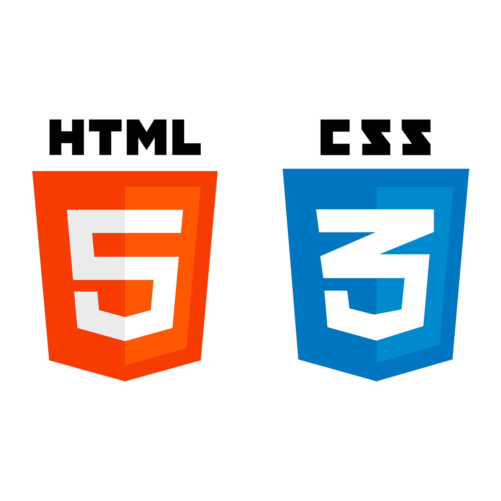
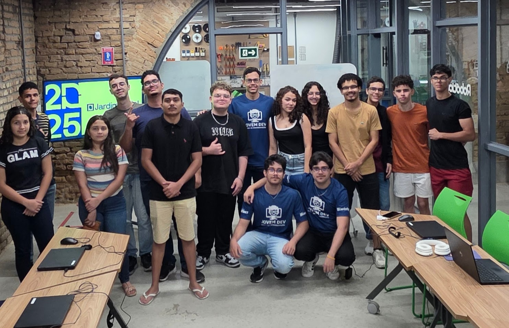
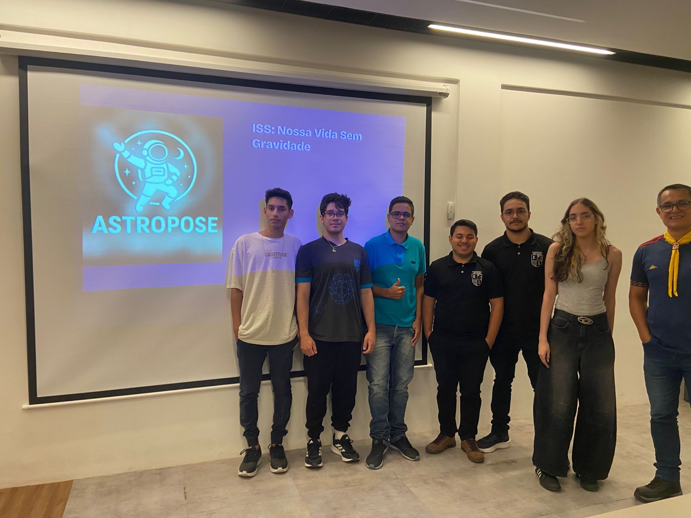
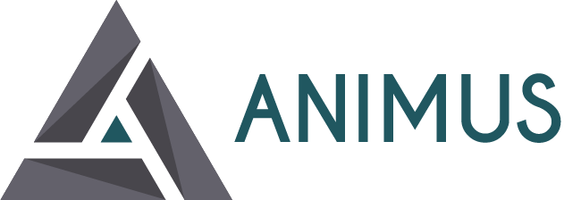

HTML & CSS
Crio Site Modernos e Tecnólogicos, com qualidade,
eficiência, alta velocidade de entrega e uma excelente experiência do usuário.
> Olá, mundo. Meu nome é█
Sou Estudante de Engenharia de Software e apaixonado no Desenvolvimento de jogos e soluções inovadoras.

Crio Site Modernos e Tecnólogicos, com qualidade,
eficiência, alta velocidade de entrega e uma excelente experiência do usuário.

Adiciono vida e interatividade às páginas web. Construo lógicas complexas, consumo APIs e garanto uma navegação fluida e dinâmica para o usuário.

Focado no desenvolvimento de scripts, automação de tarefas e estruturação de lógicas de back-end, sempre prezando por um código limpo e escalável.

Aplicado no desenvolvimento de jogos 2D. Utilizo orientação a objetos para criar sistemas de progressão, mecânicas complexas e lógicas de gameplay.
O Jovem DEV é um projeto de educação tecnológica que visa capacitar jovens com habilidades de programação e desenvolvimento de software. Através de cursos, workshops e mentorias, oferecemos uma jornada de aprendizado acessível e envolvente, preparando a próxima geração de desenvolvedores para o futuro digital. Com o selo certificado pelas ODS da ONU, o Jovem DEV é mais do que um projeto educacional - é um compromisso com a transformação social e o empoderamento dos jovens através da tecnologia.

O Projeto que nós levou aos Top 10 de Pernambuco na NASA Space Apps Challenge de 2025. Após o sucesso do ano passado, estamos trabalhando para melhorar nossos projetos existentes e desenvolver novas funcionalidades, como a realidade aumentada.

A Animus oferece inúmeras soluções: um projeto inovador que utiliza inteligência artificial para analisar e interpretar posturas corporais. Projetado para fornecer feedback em tempo real sobre a postura, ajudando os usuários a melhorar sua saúde e bem-estar.
